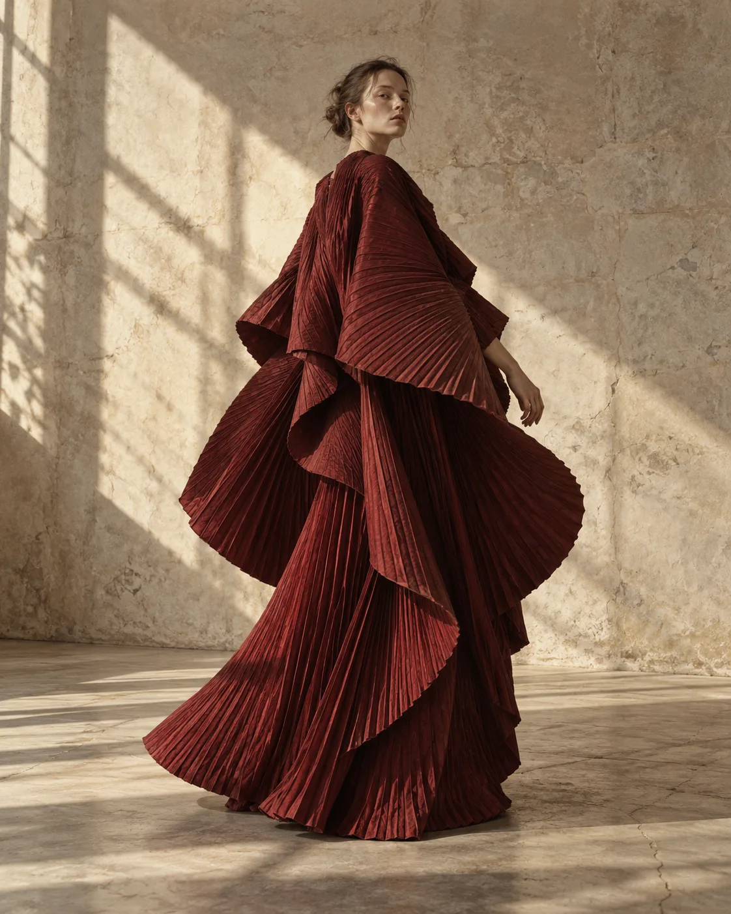
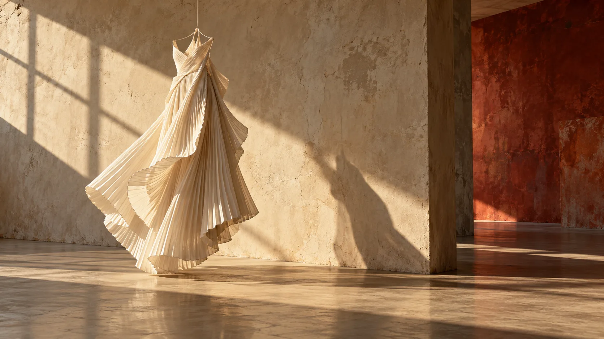
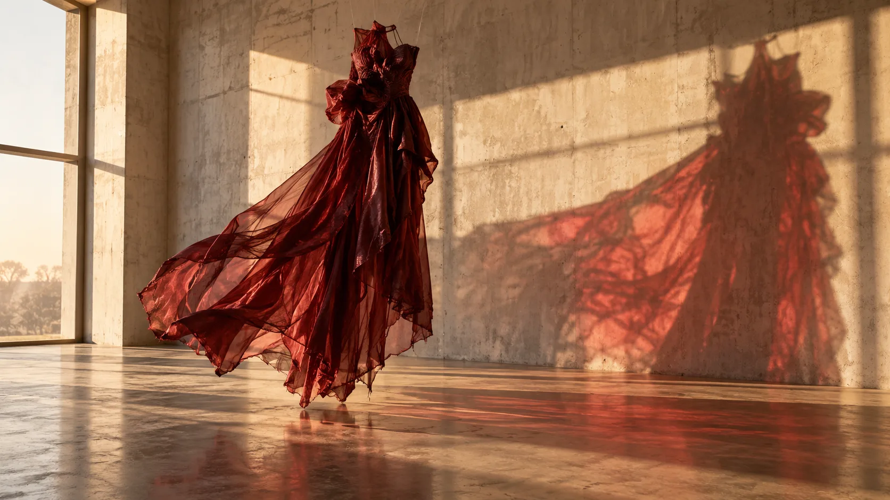

Edition 04 / Summer studies
Clothkeepstime.

An image diary of gestures that outlive the moment.
Begin study ↓I01:32 PM
Study one
The held
breath

Volume is not decoration. It records air, distance, and the body's last direction.
Not trend. Not season.
“A collection of evidence
that softness has structure.”
II04:08 PM
Study two
Soft
architecture
Fold, seam, tension. Three quiet systems holding a temporary form.
III06:41 PM

Study three
The
afterimage
When the gesture ends, a trace of its color and shape remains.